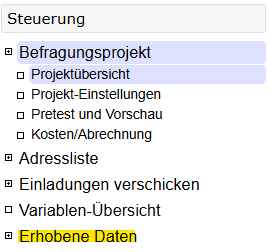
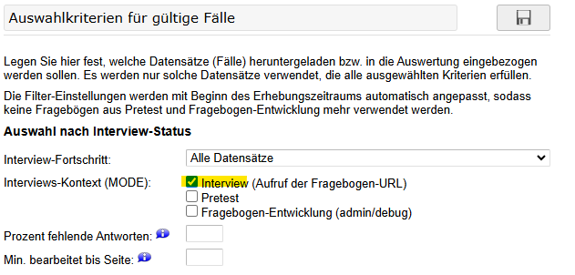
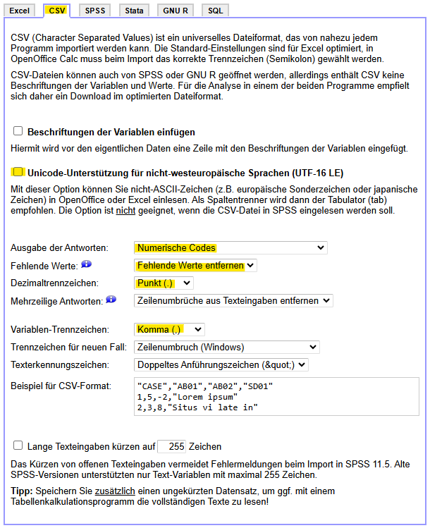

13 Datenaufbereitung
Die Informationen in diesem Kapitel beziehen sich in erster Linie auf Daten, die im Rahmen von (Online-)Befragungen entstanden sind. Je nach Erhebungsmethode und Studiendesign können weitere Schritte notwendig sein. Sprechen Sie daher Ihr Vorgehen stets mit Ihren Dozentinnen und Dozenten ab!
In diesem Kapitel schauen wir uns anhand Ihrer Daten an, welche Schritte Sie durchführen sollten, bevor Sie Ihre erhobenen Daten auswerten können.
Wir werden uns die folgenden Dinge anschauen:
- Den Datenexport bei SoSci Survey
- Das Aussortieren von Fällen mit zu vielen fehlenden Werten
- Die Überprüfung von Bearbeitungszeiten
- Die Überprüfung von offenen Antworten
- Das Umbenennen, Beschriften, Umcodieren und Berechnen von Variablen
Die meisten Funktionen kennen Sie schon aus anderen Kapiteln, aber ein paar werden wir auch neu kennenlernen.
13.1 Daten exportieren
Bevor Sie die Daten aufbereiten können, müssen Sie die Daten herunterladen. Nachdem Sie sich bei SoSci Survey eingeloggt haben, müssen Sie zunächst über die Menüleiste links zu Erhobene Daten navigieren.

In der Navigation öffnen sich nun neue Unterpunkte. Sie können z. B. die Rücklaufstatistik einsehen oder Fälle für den Export selektieren. Beim Export am Ende des Projektes sollten Sie darauf achten, dass Sie nur die Daten der eigentlichen Stichprobe exportieren und nicht die des Pretests.

Anschließend können Sie über die Navigationsleiste zu Daten herunterladen wechseln. Damit Sie die Daten in R wie gewohnt einlesen und verarbeiten können, müssen Sie einige Dinge beachten:
- Wählen Sie ganz oben das Dateiformat CSV aus.
- Entfernen Sie den Haken bei Unicode-Unterstützung für nicht-westeuropäische Sprachen. Falls Sie im Rahmen Ihrer Studie Textdaten erheben, die nicht-westeuropäische Zeichen enthalten, sollten Sie diesen Haken gesetzt lassen. Sie müssen dann beim Einlesen der Daten innerhalb von
read.csv()das ArgumentfileEncoding = "UTF-16LE"ergänzen. - Unter Ausgabe der Antworten sollte Numerische Codes angegeben werden. Das bedeutet, dass alle Antworten in Form von Zahlen gespeichert werden. Ausgenommen davon sind nur offene Texteingaben. Nominale und ggf. ordinale Daten können Sie später in R mit
factor()beschriften. - Direkt darunter bei Fehlende Werte können Sie Fehlende Werte entfernen auswählen. An den entsprechenden Stellen im Datensatz steht dann ein
NA. - Als Dezimalzeichen sollte der Punkt ausgewählt werden (siehe Kapitel 2).
- Unter Variablen-Trennzeichen können Sie das Komma auswählen.
Mit diesen Einstellungen sollte das Einlesen der Daten in R wie gewohnt funktionieren.

13.2 Fälle mit zu vielen fehlenden Werten aussortieren
Zur Veranschaulichung der Datenaufbereitung werden wir in diesem Kapitel keine echten Daten verwenden. Der Code, den Sie im Lauf des Kapitels hier sehen, wird also nicht funktionieren. Sie können ihn aber mit Ihren eigenen Daten ergänzen und dann ausführen.
Wir beginnen wie immer damit, dass wir das tidyverse laden und Daten einlesen.
# lädt das tidyverse}
library(tidyverse)
# liest einen Datensatz ein
df <- read.csv("Daten/einDatensatz.csv")Oft ist es sinnvoll oder sogar notwendig, Fälle aus dem Datensatz auszuschließen, die entweder zu viele fehlende Werte ausweisen, oder die zumindest fehlende Werte in zentralen Konstrukten (z. B. der AV) haben. In diesen Situationen können Sie die filter()- und is.na()-Funktionen verwenden, die Sie bereits kennengelernt haben.
Im einfachsten Fall haben Sie eine AV (ggf. in Form eines Index) und wollen alle Fälle ausschließen, die hier keinen Wert haben:
# filtert alle Fälle aus, die einen fehlenden Wert bei der AV haben
df <- df |>
filter(!is.na())In anderen Situationen kann es sinnvoll sein, Fälle auszuschließen, die insgesamt zu viele fehlende Werte aufweisen, z. B. 50 Prozent aller Antworten. Hierzu müssen Sie erst die Gesamtanzahl an fehlenden Werten berechnen. Dazu nutzen wir mutate(). In diesem mutate()-Aufruf berechnen wir die neue Spalte summeNAs. Dazu nutzen wir die rowSums()-Funktion. Jetzt wird es etwas komplexer: innerhalb von rowSums() rufen wir is.na() auf, denn wir wollen ja wissen, wie viele fehlende Werte es gibt. Damit R weiß, auf welche Spalten wir uns dabei beziehen, rufen wir innerhalb von is.na() die Funktion across() auf, der wir dann einen Vektor übergeben, der die Spalten enthält. Diesen Vektor können wir entweder mit c() erstellen, oder in dem wir die erste und letzte Spalte mit einem Doppelpunkt verbinden (siehe Kapitel 2). Mit filter() können wir dann alle Fälle ausschließen, die die von uns gewünschte Mindestzahl an gültigen Antworten nicht erreichen.
# berechnet die Anzahl der fehlenden Werte pro Person und schließt alle Fälle aus, die weniger als eine zuvor spezifizierte Anzhal gültiger Antworten haben
df <- df |>
mutate(summeNAs = rowSums(is.na(across(ersteSpalte:letzteSpalte)))) |>
filter(summeNAs <= zielwert)Beim Ausschluss von Fällen basierend auf der Anzahl der fehlenden Werte handelt es sich um ein Vorgehen, das die Datenqualität erhöhen soll. Dabei ist die Entscheidung, ab wann Fälle zu viele fehlende Werte haben meistens relativ wahllos. Ganz grundsätzlich sollten Sie sich schon vor der Datenerhebung Gedanken darüber machen, ab wann ein Fall ausgeschlossen werden soll. Tun Sie das nicht, entsteht leicht der Eindruck, dass Sie solange Daten aussortiert haben, bis Ihnen die Ergebnisse gefallen!
13.3 Bearbeitungszeiten überprüfen
Bei den Bearbeitungszeiten verhält es sich ähnlich wie bei fehlenden Werten. Ganz grundsätzlich kann es sinnvoll sein, Teilnehmerinnen und Teilnehmer auszuschließen, weil diese zu schnell (oder zu langsam) geantwortet haben. Allerdings sollte diese Entscheidung bereits vor der Datenerhebung getroffen werden!
In der Regel sollte diese Entscheidung davon abhängig sein, wie lang Ihre Befragung ist. Wenn Sie z.B. eine etwas längere Befragung durchführen, die im Pre-Test regelmäßig 10 Minuten gedauert hat, können sehr kurze Bearbeitungszeiten (z. B. weniger als 2 Minuten) darauf hinweisen, dass ein Fragebogen automatisiert ausgefüllt wurde. Wenn Sie ein Experiment oder eine Befragung durchführen, die einen Stimulus enthalten, können Sie sich auch daran gut orientieren. Z.B. sollten Sie hellhörig werden, wenn eine Person nur 30 Sekunden für eine Seite im Fragebogen benötigt, die ein Video enthält, das 90 Sekunden lang ist.
Die Daten, die Sie bei SoSci Survey herunterladen, enthalten pro Seite im Fragebogen eine Spalte, in der die Bearbeitungsdauer angegeben wird (z. B. TIME001 für die erste oder TIME004 für die vierte Seite). Der darin gespeicherte Wert entspricht der Bearbeitungszeit der Seite in Sekunden. Außerdem gibt es eine Spalte namens TIME_SUM, in der die Gesamtbearbeitungszeit angegeben wird. Allerdings ist hier Vorsicht geboten: Die Werte sind bereits korrigiert und angepasst. Konkret ersetzt SoSci Survey sehr lange Bearbeitungszeiten durch den Median aller anderen Bearbeitungszeiten für diese Seite, da davon ausgegangen wird, dass lange Zeiten eine Pause oder Unterbrechung der Befragung darstellen.
Sofern Sie wissen, ab wann eine Bearbeitungszeit für Ihre Studie zu schnell oder zu langsam ist, können Sie die entsprechenden Fälle mit filter() aussortieren.
13.4 Offene Antworten überprüfen
Ganz grundsätzlich sind offene Antworten schwer auszuwerten und sollten im Rahmen von standardisierten Befragungen nur in ausgewählten Situationen verwendet werden. Denn streng genommen müssten Sie für jede Frage mit offener Antwort eine Inhaltsanalyse durchführen, um die Daten auszuwerten. Allerdings gibt es immer mal wieder Fälle, in denen offene Fragen oder Antwortoptionen sinnvoll sein können, z. B. die Sonntagsfrage mit der Antwortoption “sonstige und zwar ____”.
Die Aufbereitung solcher Abfragen ist sehr individuell. Ein Beispiel haben Sie in Kapitel 3 kennengelernt, als wir das Geburtsjahr in eine Angabe des Alters umgewandelt haben. Es gibt allerdings einige Funktionen, die für offene Fragen sinnvoll sein können:
table(), um einen Überblick über die Häufigkeit der einzelnen Antworten zu erhalten.
unique(), um alle Antworten zu sehen, die mindestens einmal angegeben wurden.
Beide Funktionen sind insbesondere dann sinnvoll, wenn Sie erstmal einen Überblick darüber bekommen wollen, was Ihre Befragten eigentlich in das offene Feld geschrieben haben.
Eine hilfreiche Funktion zum Umcodieren von offenen Antworten ist case_when(). Damit können wir Werte immer dann verändern, wenn eine bestimmte Bedingung zutrifft. Diese Funktion wird innerhalb von mutate() aufgerufen. Konkret geben wir die Bedingung an (z. B. in Form eines Vergleichs) und schreiben dann hinter eine Tilde (~), welchen Wert die neue Spalte (die wir mit mutate() anlegen) annehmen soll, falls die Bedingung zutrifft. Durch ein Komma können wir mehrere Bedingungen nacheinander prüfen und mit dem Argument .default können wir angeben, welcher Wert standardmäßig vergeben werden soll. Hierbei kann es sich um einen festen Wert handeln, aber auch eine Variable, die in einer anderen Spalte gespeichert ist.
# nutzt case_when(), um eine fiktive Sonntagsfrage umzucodieren
df <- df |>
mutate(sonntagNeu = case_when(
sonntagAusgang == "Tierschuttpartei" ~ "Tierschutzpartei",
sonntagAusgang == "SDP" ~ "SPD",
.default = sonntagAusgang
))13.5 Umbenennen, Beschriften, Umcodieren und Berechnen
Die letzten Aspekte, die zu jeder Datenaufbereitung gehören, kennen Sie mittlerweile zur Genüge.
13.5.1 Umbenennen
Mit rename() können Sie Spalten umbenennen. Denken Sie daran, dass Sie mehrere Spalten auf einen Schlag umbenennen können, indem Sie die Kombinationen aus neuen und alten Namen mit einem Komma trennen. Beachten Sie auch, dass ein rename()-Befehl nur einmal ausgeführt werden kann, nachdem der Datensatz geladen wurde. Im Anschluss erkennt R die alten Namen nicht mehr und wird einen Fehler ausgeben. Im Zweifel lesen Sie den Datensatz einfach noch mal ein!
13.5.2 Beschriften
Mit factor() können Sie nominale und ordinale Daten beschriften. Achten Sie darauf, dass Sie wirklich nur solche Daten beschriften. Eine Frage, die mit "stimme überhaupt nicht zu", "stimme eher nicht zu", "teils-teils", "stimme eher zu" oder "stimme voll und ganz zu" beantwortet wurde und die Sie als metrische AV verwenden wollen, sollte nicht beschriftet werden!
13.5.3 Umcodieren
Das Umcodieren von Variablen ist in zwei Fällen sinnvoll:
- Wenn Sie eine Skala verwendet haben, bei der die Items unterschiedlich gepolt sind. Also z. B. wenn hohe Werte in einigen Items ausdrücken, dass jemand eine bestimmte Einstellung sehr stark vertritt, während für andere Items niedrige Werte genau das angeben.
- Wenn Sie möchten, dass hohe oder niedrige Werte eine bestimmte Bedeutung haben (z.B. starke Zustimmung = hoch).
In beiden Fällen können Sie mutate() nutzen, um eine recodierte Version des Items zu berechnen. Die Formel dazu haben Sie in Kapitel 12 schon mal kennengelernt. Ganz grundsätzlich können Sie bei metrischen Items nach folgendem Schema vorgehen: mutate(itemRecodiert = item * -1 + x), wobei x der Anzahl der Antwortoptionen + 1 entspricht (also z. B. 5+1 bei einer 5er-Skala oder 7+1 bei einer 7er-Skala).
Natürlich gibt es auch viele Fälle, in denen es nötig sein kann, nicht-metrische Variablen umzucodieren. Ein relativ häufiger Fall ist das Zusammenfassen von Ausprägungen. Das ist immer dann sinnvoll, wenn Sie sehr vielfältige Antwortoptionen vorgegeben haben, von denen dann viele nur sehr selten angekreuzt wurden. Auch hier können Sie die case_when()-Funktion verwenden, die Sie oben bereits kennengelernt haben. Das nachfolgende Beispiel zeigt, wie der Code aussehen würde, wenn Sie von insgesamt 10 Ausprägungen 4 zusammenfassen würden:
# nutzt case_when(), um Antwortoptinen einer fiktive Abfrage zusammenzufassen
df <- df |>
mutate(variableZusammengefasst = case_when(
ausgangsVariable == "Ausprägung 1" ~ "Ausprägung 2",
ausgangsVariable == "Ausprägung 3" ~ "Ausprägung 4",
ausgangsVariable == "Ausprägung 5" ~ "Ausprägung 6",
ausgangsVariable == "Ausprägung 7" ~ "Ausprägung 8",
.default = ausgangsVariable
))Natürlich geht das auch mit Variablen, die in Zahlenform vorliegen. Und wie konkret Sie die Werte zusammenfassen, hängt immer davon ab, was Sie eigentlich erhoben haben und was Sie damit auswerten wollen.
# nutzt case_when(), um Antwortoptinen einer fiktive Abfrage zusammenzufassen
df <- df |>
mutate(variableZusammengefasst = case_when(
ausgangsVariable == 1 ~ 2,
ausgangsVariable == 3 ~ 1,
ausgangsVariable == 5 ~ 1,
ausgangsVariable == 7 ~ 3,
.default = ausgangsVariable
))Weiterhin gibt es unzählige weitere Möglichkeiten, Variablen umzucodieren, z. B. das Deklarieren von fehlenden Werten, wie wir es im Fall der Geschlechtsabfrage im Kurs kennengelernt haben. Was für eine bestimmte Umcodierung ganz konkret zu tun ist, hängt jeweils von Ihren Daten und wie Sie diese auswerten wollen ab. Falls Sie mal vor einem Problem stehen, dessen Lösung Sie in diesem Kurs nicht kennengelernt haben, versuchen Sie sich ruhig mal an Google oder ChatGPT (bzw. dem Chatbot Ihrer Wahl). Für Google gilt: versuchen Sie, Ihr Problem möglichst kurz und bündig zusammenzufassen, also z. B.: “Werte zu NAs umcodieren R”. Falls Sie einen Chatbot nutzen, versuchen Sie dagegen, möglichst konkret zu werden. Beschreiben Sie Ihren Datensatz bzw. die Variable, die Sie umcodieren möchten und geben Sie vor allem sehr genau an, was am Ende herauskommen soll.
13.5.4 Variablen neu berechnen
Im Lauf des Kurses haben wir viele Variablen neu berechnet. Ganz grundsätzlich sind wir dabei immer gleich vorgegangen: mutate(neueVariable = Formel/Funktion/Berechnung)
Einen Sonderfall, den Sie kennengelernt haben, ist die Bildung von sogenannten Indizes, insbesondere von Mittelwertindizes. Wir haben sie wie folgt berechnet:
# berechnet einen Mittelwertindex für die 5 Items
df <- df |>
rowwise() |>
mutate(index = mean(c(item1, item2, item3, item4, item5))) |>
ungroup()Beachten Sie, dass Sie vor der Berechnung eines solchen Indizes immer Cronbachs Alpha berechnen sollten (siehe Kapitel 12).
Eine weitere Berechnung, die Sie gelegentlich brauchen werden, ist das Summieren von angekreuzten Antwortoptionen bei Fragen mit Mehrfachauswahl. Bevor Sie mit der Berechnung loslegen können, sollten Sie darauf achten, dass die Daten so codiert sind, dass der Wert 1 jeweils einer Auswahl einer Option entspricht. Wurde eine Option nicht ausgewählt, sollte der Wert 0 eingetragen sein. Da jede Option im Datensatz eine eigene Spalte erhält, können Sie die Anzahl der ausgewählten Optionen dann ganz einfach berechnen, indem Sie die Werte in den Spalten addieren. Wie oben, als wir die Anzahl fehlender Werte berechnet haben, nutzen wir dafür rowSums().
# berechnet einen Summenindex für Mehrfachantworten
df <- df |>
mutate(summe = rowSums(across(c(option1, option2, option3, option4))))) |>Ansonsten gilt hier dasselbe wie beim Umcodieren: Es gibt unzählige Möglichkeiten, neue Variablen zu berechnen. Was jeweils sinnvoll ist, hängt davon ab, was Sie genau vorhaben!